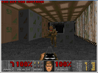
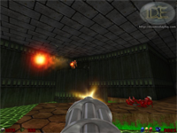
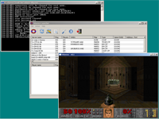
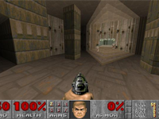
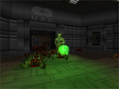

Open Source Alternatives to Doom Games
Doom:
Doom is a blockbuster first-person shooter that made its debut in 1993 created by id software. It is widely recognized for having popularized the first person shooter genre, with immersive 3D graphics, networked multiplayer gaming, and support for customized additions and modifications via packaged files in a data archive known as "WADs". Its graphic and interactive violence made it the subject of considerable controversy. In Doom, players assume the role of a space marine who must fight his way through a military base on Mars' moon, Phobos, and kill the various demons.
Below is a collection of free alternatives to Doom:
Chocolate Doom
 In 1998 the Doom source code was released. Since then, there have been a large number of Doom source ports created by programmers who have extended the code, adding new features and removing some of the limitations of DOS Doom (which is now often referred to as "Vanilla Doom"). These efforts should be commended, and many of the modern Doom source ports are truly impressive pieces of work. Chocolate Doom, however, takes the opposite approach. It instead aims to accurately reproduce the experience of playing Vanilla Doom. It is a conservative, historically accurate Doom source port, which is compatible with the thousands of mods and levels that were made before the Doom source code was released. Rather than flashy new graphics, Chocolate Doom's main features are its accurate reproduction of the game as it was played in the 1990s. The source code to Chocolate Doom is Free Software under the GNU General Public License, and is portable to a variety of different operating systems. It therefore preserves the gameplay of the original game for modern computers, many of which are now unable to run the original. Download Chocolate Doom
Doomsday
 DOOM and its follow-ups are timeless classics that made the first-person shooter genre popular among gamers. Those fortunate enough to have experienced the games as they were released back in the early 1990s are sure to remember the fluid gameplay and the intense, immersive look and feel. However, by today's standards, the games look and sound dated. This is where Doomsday comes in: we have replaced much of the original engine's technology with a more modern implementation. We aim to provide the same thrilling gameplay experience for today's gamers. Download Doomsday
Odamex
 Odamex is a free and open source port for the classic first-person-shooter Doom. Odamex's goal is to emulate the feel of and retain many aspects of the original Doom executables while offering a broader expanse of security features, personal configuration, gameplay options, and editing features. Odamex currently supports the traditional old-school style of Deathmatch and a Cooperative mode, but it also includes other game modes such as Teamplay and Capture the Flag. It also supports an array of editing features, including the BOOM map format, DeHackEd and BEX patch support and support for several additional music formats, such as MOD and OGG. Download Odamex
Prboom
 PrBoom, originally short for "Proff Boom", is a source port for Windows, Linux/POSIX, OpenVMS and Mac OS X based initially on Boom, but later merged with LxDoom and LsdlDoom. As a result of this merger, PrBoom is compatible with both Boom and MBF. It includes OpenGL features for the renderer (as GLBoom) as well as some enhancements over the engines it is based on, such as being able to handle levels with twice as many segs, vertices and sidedefs than usual. In addition to the code from its predecessors, it incorporates bits of code from the Eternity Engine, and PrBoom+. Unlike other source ports that concentrate on offering many new game features or changes, such as ZDoom, EDGE and the Eternity Engine, PrBoom aims to act as a stable port of the more established or traditional engines. Download Prboom
zDoom
 ZDoom is a source port, originally based on ATB Doom and NTDOOM. It has since added full support for all commonly-used Boom additions, Heretic, Hexen, Strife and Chex Quest. It has added many additional features, including slopes, uncapped framerate, and z-clipping. Download zDoom